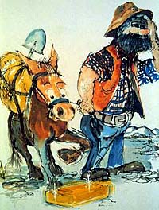
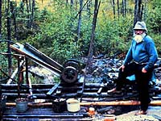
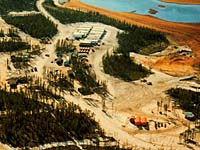

 Man has used 'rocks', like quartz, limestone and clay, from the ground for thousands of years. Gold, silver, copper and precious stones were used for personal adornment, trade, a measure of man's wealth and a measure of the wealth and power of governments and rulers. These minerals had to be searched for, located and retrieved from the earth. Over time, man's methods of searching for the minerals has become more refined. Knowledge of mineral deposit characteristics and the history of the earth is part of the process. Advancements in technology have contributed to changes in exploration. The need for new sources of minerals is necessary to meet the increasing demand of the world's population and to replace presently known deposits which must at some time be exhausted. Minerals are a 'non-renewable' resource, meaning that in our lifetime, they cannot be replaced. Thus, the need for exploration of new deposits.
| |||
 As few as 50 years ago, the main method of prospecting and exploration of orebodies was to use strictly visual observation. Prospector is the term applied to the person who searches for minerals within the earth. Early prospectors differed from modern prospectors in the methods used to locate orebodies. The traditional method of locating orebodies involved traversing over land looking for outcrops, collecting samples from the area and performing tests on the sample by the prospector. The modern prospector might use the traditional method as well as geological surveys, maps and instruments designed by geologists and geophysicists to make the job easier and more productive. Some sophisticated instruments that measure physical properties of the earth (like changes in gravity or conductivity; or variations in the earth's magnetic field) are carried in aircraft. These instruments can help the prospector to select areas where a mineral deposit can be found. Let's take a look at how mineral deposits are located.
| |||
|
Steps in Locating Mineral Deposits
Geophysics involves a combination of geology (the study of the earth) and physics (the study of the laws of matter). Rocks have certain physical and chemical characteristics unique to their type. Geophysicists use these characteristics to help pinpoint and identify deposits. These characteristics include:
Irregularities in a geophysical survey can indicate the presence of an orebody. Diamond drilling may then be used. Examples of instruments or special methods used in geophysical surveys are:
Geochemistry involves the use of chemistry to determine the content of possible orebodies. By studying soil, vegetation and water in a surrounding area, geochemists can determine the type of mineral or elements present in the ground. For example, radon surveys are used in the search for uranium, since radon gas is one of the decay products of uranium. As well, analysis of water samples can reveal that uranium or radium are present. The sample of water is traced back to the source and further investigation is done.
What is the next step in the mining process?Saskatchewan has a vast supply of minerals and the province has variety of mining operations. As described previously, a combination of methods and techniques are used in the exploration of these minerals. Once it has been determined an orebody exists, the construction of a mine is considered. Samples are collected to determine if the mineral present is in high enough concentrations (and orebody large enough) and of sufficient quality to build a mine.
| |||
 The Mine
The purpose of a mine is to extract a metal, mineral or material of marketable value from the earth, at the lowest possible cost, with the least disturbance to the natural environment and people living in the area. For these reasons, public hearings are held to gather opinions regarding the impact of the mine operation on the surrounding area. Capital resources are put in place to construct the mine. Once the resources are depleted, a safe mine closure is initiated and completed. In all, only 0.1% of available land in Saskatchewan is used in the mining industry. |